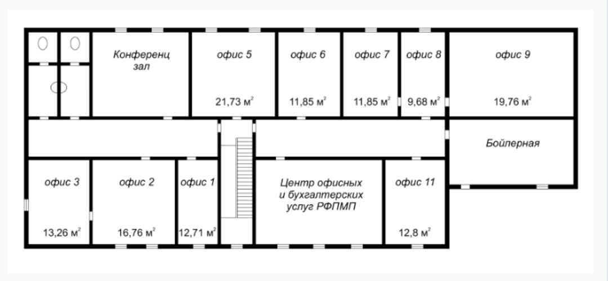
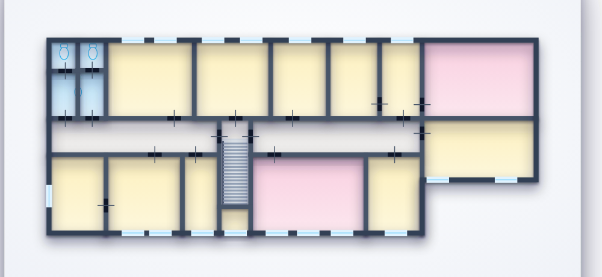
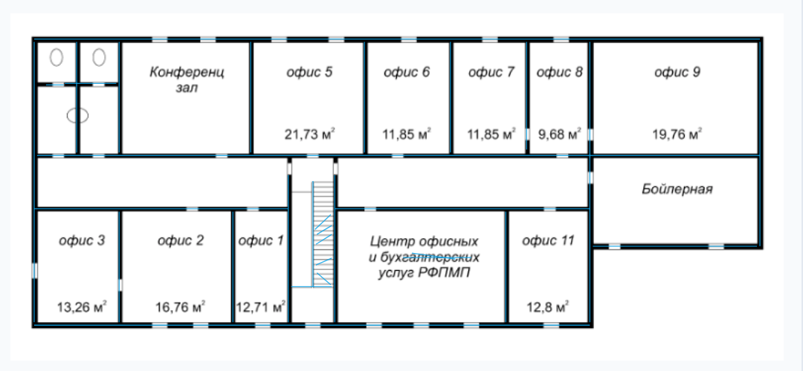
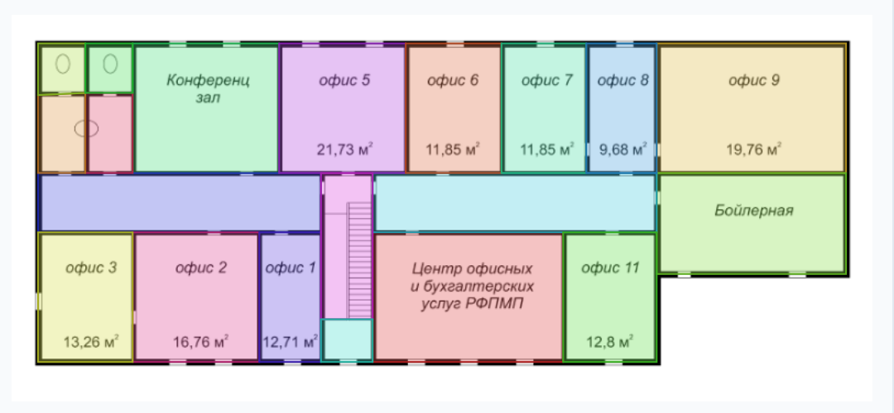
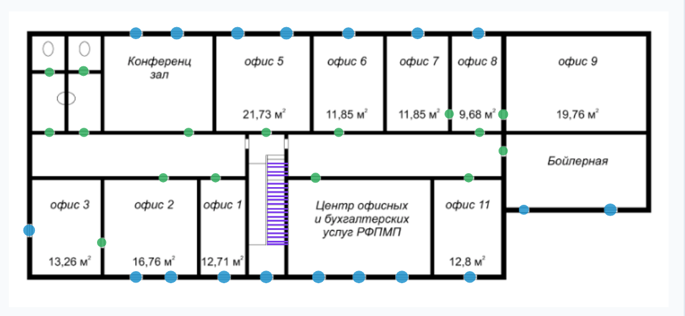

План этажа
уже нарисован.
Скан из архива: паутина линий, подписи от руки, размеры на полях. По такому
чертежу нельзя работать — его просто терпят.

FloorPlan Studio
Чертёж превращается в живой план этажа
0,1 секунды
целиком в браузере
без сервера и облака
Конвертер чертежей
Было → стало
Стало — красивый план

20помещений
18дверей
18окон
4прибора
1марш лестницы
≈90 мсна весь разбор
Векторный разбор
1
Чернила → скелет
Линии чертежа утончаются до одного пикселя.
2
Скелет → отрезки → стены
Отрезки складываются в пары граней: так узнаётся настоящая стена, а не
случайная линия.
3
Стены → планарный граф
Каждая замкнутая грань графа — помещение. Настоящий многоугольник,
со всеми скосами.
4
Разрывы → двери и окна
Комната с обеих сторон — дверь. С одной — окно.
5
Ступени → марш
Ровная стопка штрихов одной ширины — лестница.



Стены — 31
Помещения — 20
Проёмы — 16 окон / 18 дверей / 1 марш
Так программа видит чертёж: найденное показывается прямо поверх оригинала.
Проверка на живых чертежах
Там, где прежний разбор сдавался
План коттеджа
нерегулярная планировка, короткие стены
План БТИ
штриховка, размерные линии, рваные стены
помещений / дверей · и наружное крыльцо,
которого прежний разбор не видел в принципе
Чтение подписей
Геометрию машина читает до пикселя.
Буквы — отдельно.
12 / 12
Названия помещений подставляет зрительная модель, запущенная на этом же
компьютере.
ни один чертёж не покидает вашу
машину
Конференц зал
офис 5
офис 7
офис 9
Бойлерная
офис 3
офис 2
Центр офисных услуг
Интерактивный план
Вектор остаётся чётким
на любом масштабе
- Угол обзора
- 60°
- IP-адрес
- 10.0.0.16
- Запись
- Идёт запись
- Модель
- AX-M200
Лифты
Камеры
Банкоматы
Лестницы
FloorPlan Studio
Чертёж, который лежал в архиве, становится инструментом.
REACT 19 · VITE 8 · MOBX 6 · SVG